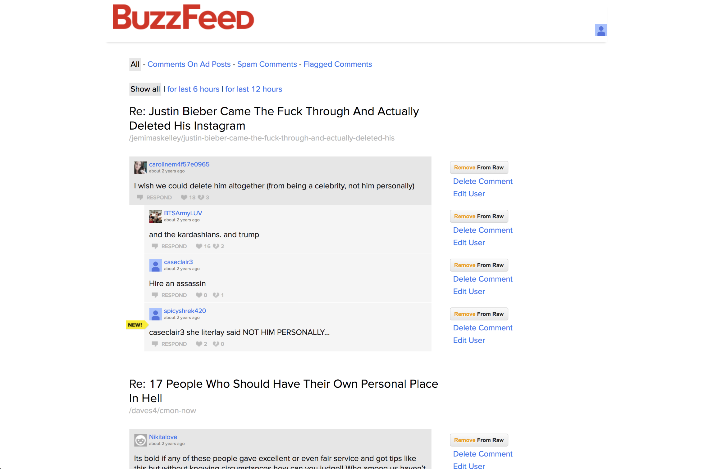

Noga Raviv
Comment Moderation Tool
In the fall of 2018, the BuzzFeed Originals team decided to (re)introduce native comments (in addition to having Facebook comments) on the BuzzFeed website.
We'd had native comments in the past but removed them when we introduced Facebook comments. However, after we removed them, we received a ton of feedback from both our editorial staff and our readers that they missed native comments because they didn't trust Facebook comments, or that they felt Facebook comments lacked anonymity and would show up in their friends feeds, which was especially important for more sensitive topics where people could share more intimate things and feel more a part of the community.
Since the internet is...well, the internet, bullying & spammy comments (among many other types) are quiet common. Especially on a website as popular as BuzzFeed. And *especially* when there's a level of anonymity.
With the reintroduction of comments, we needed an easy-to-use, more robust tool to account for the many comments we anticipated coming in.
Goals
- Reduce the comment moderation turnaround time to ~15 minutes a day
- Reduce the time to moderate a specific comment on an arbitrary post to less than 1 minute.
- Allow for the volume of comments to be effectively scaled up.
- Allow moderators to view comments by user and by post.
Original State
Since BuzzFeed comments already existed on the BuzzFeed app, our community team already had an existing tool to moderate comments:
At first glance, it's obvious that this tool is quite old. The patterns are not consistent with the rest of our tools, which use our styleguide Solid. What isn't visible in this static mock are the bugs and errors the tool makes when, for example, users want to do something basic like delete a comment. In addition to fixing the bugs and visuals, we knew there were more features to add since the community team had been asking for new things for a while.
User Research
My product manager and I conducted 3 sessions with 3 different editors who use the tool to moderate comments daily. From this, we learned:
- There were a *lot* of bugs (sometimes pressing "delete" wouldn't work!) that keep moderators from blocked the moderators from using the tool quickly.
- They had trouble onboarding new moderators because the tool was very confusing and required a lot of explanation.
- There wasn't a way to search for a specific comment via post or via user. (Which is important when a controversial comment needs to immediately be deleted.) The only way they can delete the comment is by flagging it themselves on the actual post and then going into the system and deleting it.
- There wasn't a way to see a comment after they'd taken an action on it. (If they deleted a comment, it went into The Void, never to be seen again.)
- To ban a user, they needed to use another internal tool to do so.
Requirements
With that, we decided on a few must-haves for the new tool:
1. Flagged Comments View: The moderator needs can see and moderate comments that are flagged by readers. (In this view flagged comments need to be nested in the context of the comment’s surrounding post and thread.)
2. User Comments View: The moderator needs to be able to see and moderate all the comments posted by a given user.
3. Post Comments View:** The moderator needs to be able to see and moderate all the comments attached to a given post
4. Room for future custom filters: We can envision this tool expanding to more proactively find and filter unwanted comment - including finding and suggesting moderation for posts with offensive keywords. (Not a part of the MVP but we should include space for it in our design concept.)
Information Architecture
I created several very low fidelity wireframes to test out different ways to map out the views.
Since our goal is to make moderating comments as quick and easy as possible, I kept the existing layout with the entire comment thread displayed at once (Layout #1), in one long feed since this was working really well in the existing design (seeing all the comments at once makes it easy for moderators to scan and immediately act) - there was no need to reinvent the wheel.
Ch-ch-ch-changes
In these explorations I introduced a "catch-all" search bar, allowing moderators to search both by user and by post in the same bar. However, after discussing with the team we realized we couldn't do that and instead needed a way to indicate what type of search the moderator will be making before searching.
We then showed this to the community editorial team, who found this way of searching confusing. Instead, we decided to create a User tab in the navigation as well as a Post tab. This allowed us to add more functionality within the tabs in the future while also making the tool easier to use.
Refining Action Items
Each comment can be hidden, deleted, or approved. We found in user research that moderators manually delete comments and batch approve the rest.
When we first mapped this out we introduced a new, manual approve button to give moderators another option when they are moderating (e.g. when they don't have time to batch approve comments, they could approve them one by one). While this sounded ideal in theory, in practice this complicated things when it came time to place them in the reviewed, hidden, and deleted columns. We scratched this idea and stuck to "hide" and "delete".
We also experimented with removable labels, but quickly realized it added unnecessary complexity (why have two "unhide" buttons?).
I also explored different visual treatments for these action items:
...but ended up sticking with the simpler, blue text with no borders or icons since it matched the rest of the tool and didn't add any unnecessary visual complexity.
Taking an action
I then explored what it would look like once a comment was hidden and deleted:


This drew back to our original goal of allowing the moderators to "undo" actions instead of losing them in the void.
Ta-da!
Inbox view:
User comments view:
Post comments view:
Next steps
We just launched this (March 26, 2019) - we plan to follow up with the moderators in the next couple of weeks to see how we can improve it even more!